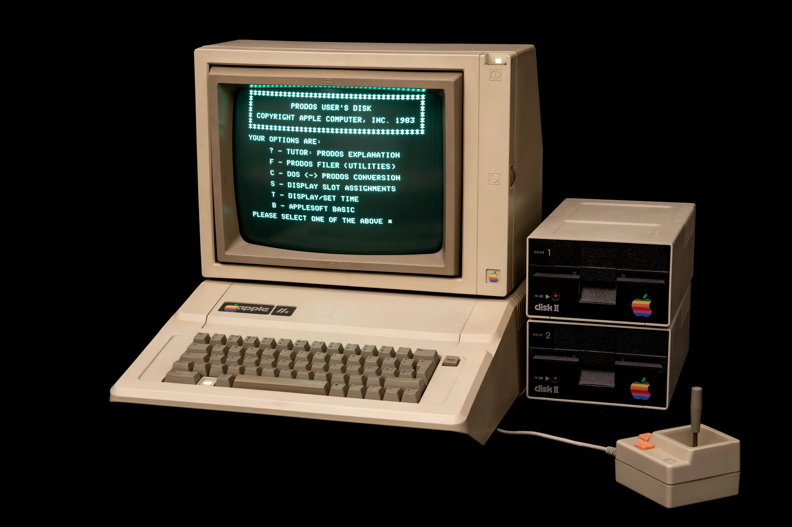

MACHINES 9 items
Machines
The computers that defined the decade, from the IBM PC to the Atari ST, each with its processor, memory and launch price.
Browse the machinesThe decade the computer left the laboratory and arrived on the kitchen table. Nine machines, eighteen programs, and the milestones that tie them together.
See the machines
Retrocomputing is the study, preservation and continued use of computers the industry left behind. People repair them, photograph and document them, write new software for them, and keep the manuals that explain how any of it was supposed to work.
Most of that attention lands on the 1980s, and for a good reason. At the start of the decade a personal computer was a kit for people who enjoyed soldering. By the end of it, it was an appliance with a mouse, a hard disk and a word processor, sold in department stores. This gallery covers what people actually used in those ten years.
Each one answers a different question about the decade.
MACHINES 9 items
The computers that defined the decade, from the IBM PC to the Atari ST, each with its processor, memory and launch price.
Browse the machinesSOFTWARE 18 items
Operating systems, productivity tools, programming languages and games — what people loaded off the floppy once the machine had booted.
Browse the softwareTIMELINE 10 years
Year by year from 1980 to 1989, with every milestone tagged as hardware, software or company so you can follow one thread at a time.
Follow the timeline